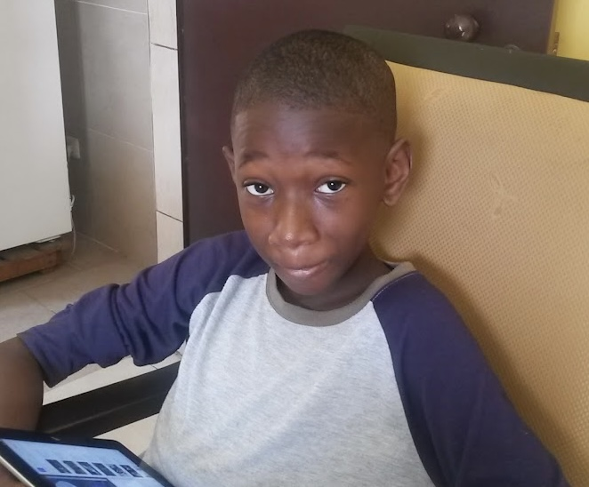

Currently a Master Student in Biostatistics at the University of Washington. I obtained my Bachelor's in Statistics from the University of Toronto (UTSC). I enjoy exploring and learning about a range of statistical theory and methods and am generally interested in how they shape clinical areas, particularly in developing designs and methodologies that are robust and interpretable. Originally, I am from the Ivory Coast and I grew up in Abidjan.